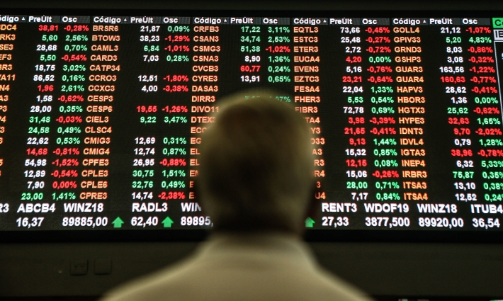

O mercado futuro é o ambiente do mercado financeiro em que são feitas negociações de compra e venda que serão realizadas apenas no futuro.
Os produtos negociados são de diverso
Os contratos são negociados parcialmente e não pelo valor total, o que aumenta a possibilidade de participação. Além disso, não existe entrega de produto. O que se compra, de fato, é o direito sobre a variação de valor sobre ele.
Assim como em títulos de investimento e no mercado de ações, o ativo muda de preço conforme a oferta e a procura.

No mercado futuro, os produtos são negociados em lotes mínimos. Para começar o investimento, é necessário ter uma margem de garantia, uma espécie de caução. Isso faz com que o investidor demonstre ter capacidade de arcar com as oscilações do mercado.
Veja outras características do mercado futuro:
Contratos têm ajustes diários;
Alta liquidez;
Ativos podem ser negociados a qualquer instante;
Esse preço futuro é equivalente ao preço à vista somado aos custos de carregamento da mercadoria até a data de vencimento.
Esse é um tipo de mercado que apresenta ótimas oportunidades. Por outro lado, também existem riscos. Até por isso, a indicação é apenas para investidores mais experientes e familiarizados.